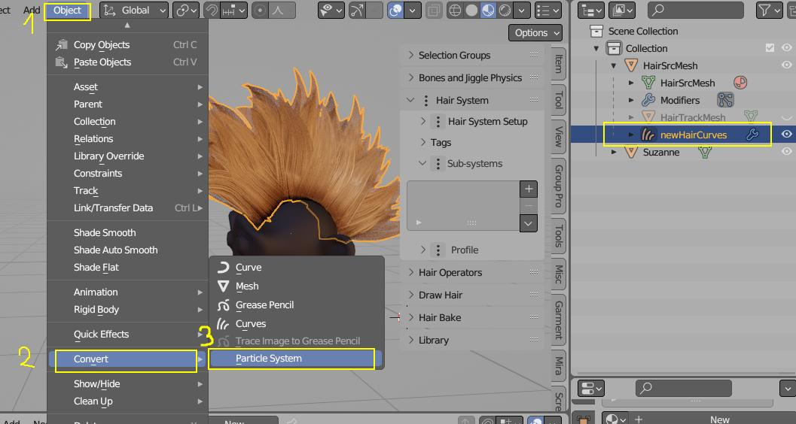

Convert¶
These operators will allow you to convert curve hair with profile, to mesh haircards.
Convert Hair To Mesh¶
Converts hair curves object to mesh haircards. You will be able to restore original hair system with Restore Hair Object operator.
Use:
- after you finished making hair in curve mode,
- before exporting hair to game engine,
- when you want to rig and animate hair.
This operator ensures that curve: UVs, vertex colors, sampled Colors and other attributes are properly transferred to mesh version of hair.
If you do not want to mess up with your original hair object, use Finalize Hair operator instead.
Finalize Hair¶
Just like "Convert Hair To Mesh," but the generated mesh will be created as a separate object. This allows you to keep your original hair object safe while using the mesh copy that's ready for exporting. Once you've exported the hair, you can get rid of the copy and carry on with your work on the original object.
Operator properties (F9):
- Join Instances - join result of 'Finalize Hair' into one object.
Haircards to Mesh Loops¶
You can convert existing haircards to mesh loops (and then to curves), with this operator.
Existing Haircards have to have 'nice' uv's > going from root (top) to tip (bottom) of the card. Conversion will work even on triangulated mesh
Note: You can convert generated mesh loops to curves using built-in Blender operator: Object menu (W - key) > Convert to > Curve, and then Convert to > Curves, to generate new hair curves. After that you can assign Profile to the result.
Note: After converting mesh loops to curves, you can resample them - with Hair Tool: Ctrl+Shift+H > Resample operator.
Keywords: Hair cards to curves, hair to 3d curves loops, mesh to curves,
Particle Hairs to Curves¶
 Particle Hairs to (old) Curves - generate old path curve object from particle hairs.
Particle Hairs to (old) Curves - generate old path curve object from particle hairs.
Note: old Curves (e.g. Bezier or Path Curves) are no longer supported in Hair Tool 3.x. You can convert then to new hair curves using Blender built-in: W menu > Convert > Curves
Hair Curves to Particle System¶
 This will work only if new curves hair object is selected
- First you may need to transfer Hair System to hair curves (e.g. if it is attached to mesh): Ctrl+Shift+H > Transfer Hair System > To Curve
- If your hair curves are not 'real' (no curves are visible in Edit mode), bake them to 'real' geometry: Ctrl+Shift+H > Bake All Subsystems
- Now finally you should be able to use Blenders built-in: Object menu > Convert to > Particle System (see image above)